Bojian Wu
ustcbjwu [AT] gmail.com
Chinese Academy of Sciences (CAS)
Week 12
B-rep sphere and hemisphere(solid, not in plate mode)
There is a problem occurred when using sphere and hemisphere as examples. Because they are all revolution surfaces, so they contain singular vertices(orange points) at the end of the reference curve(red curve) as depicted in the follows.
Let us take the sphere(left) as example, if the ray shoots from the direction as depicted in yellow, it will give a miss. After tracking the code step by step, I find that it can not compute the normal at this point correctly(the calculated result show normal=(0.0, 0.0, 0.0)), so on the manifold surface, this point should be considered as a singular point. Same as the hemisphere(right), but more than sphere, it will give a miss when shooting the ray from the side.
But the problem here is how to compute the normal? In the implementation of BRL-CAD, it uses openNURBS built-in functions to compute the normal, but it fails on such singular points. What I think is to use its neighboring information do deduce the missing data.
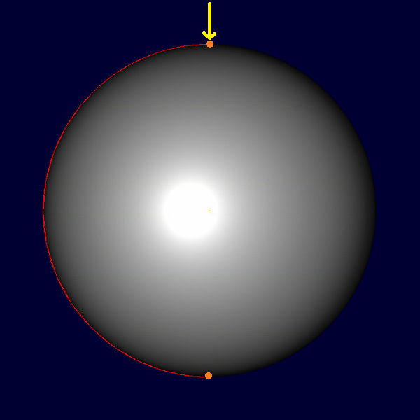 |
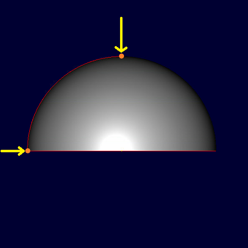 |
The result is as follows. If I translate the mode a little bit and avoid the singular points, the ray will hit the model.
| Solid Model | Top | Front | Left |
| Hemisphere | 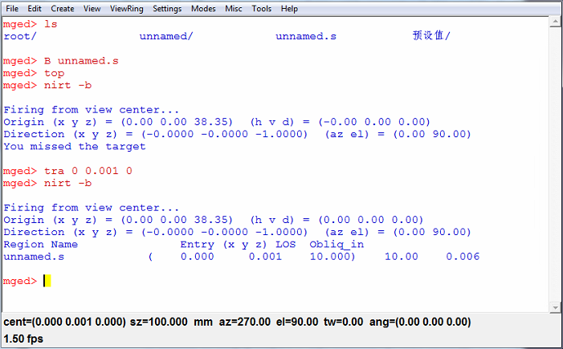 | 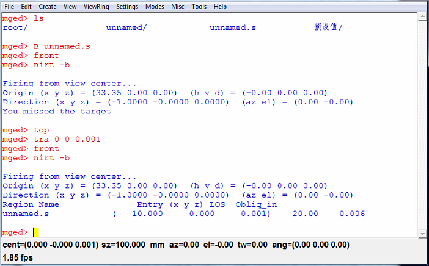 | 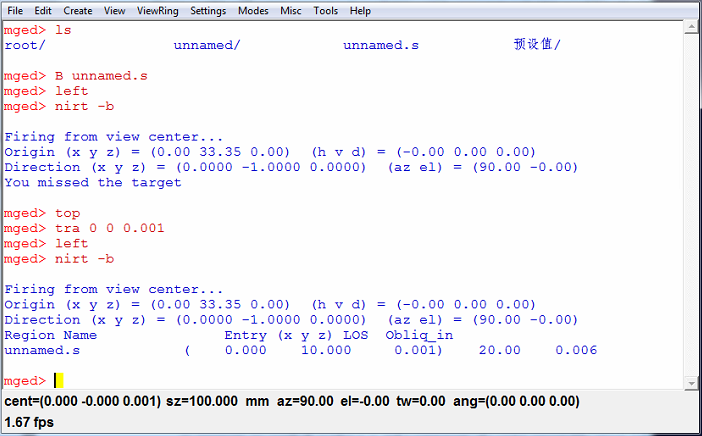 |
| Sphere | 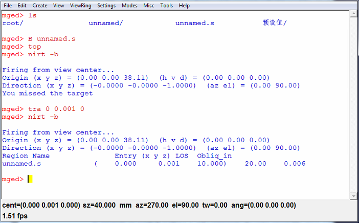 | 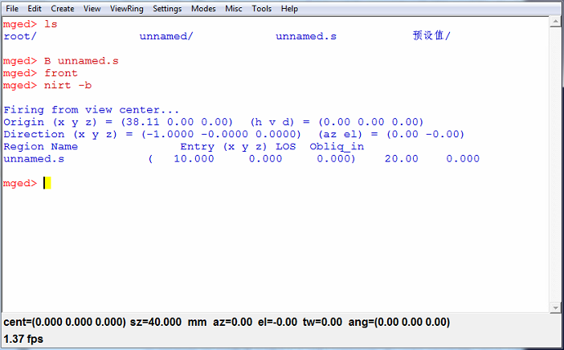 | 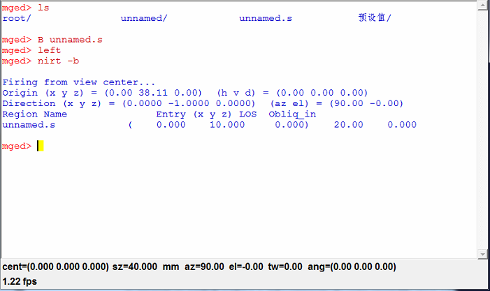 |
{kind=link}
{kind=link}
{kind=link}
{kind=link}
{kind=link}
{kind=link}
Examples of B-rep model(brep_cobb) using *nirt*
Here is an example of *raytrace* and *nirt* of 'brep_cobb'. Because the 'brep_cobb' is a concatenation of six pieces of surface, so it is not a solid model, I can not generate the 'nirt 1' result like the BoT example below, but I have the following *nirt* result for both surface mode(two hit points with LOS equaling to 0 and a purple line indicating a gap between them) and plate mode(two hit points with LOS equaling to 0.5 and blue/yellow line indicating thickness of the surface and a purple line meaning a gap).
By the way, the configuration of the B-rep is: center=(0.0, 0.0, 0.0), radius=1.0, thickness=0.5.
| Surface Mode | Plate Mode |
| 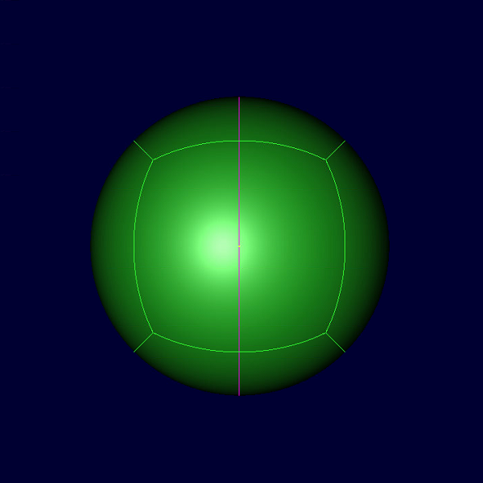 | 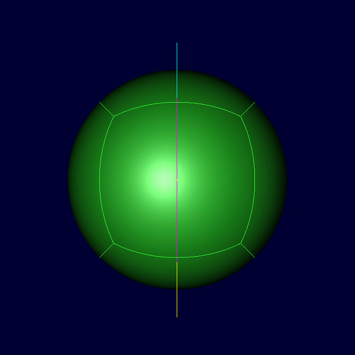 |
| 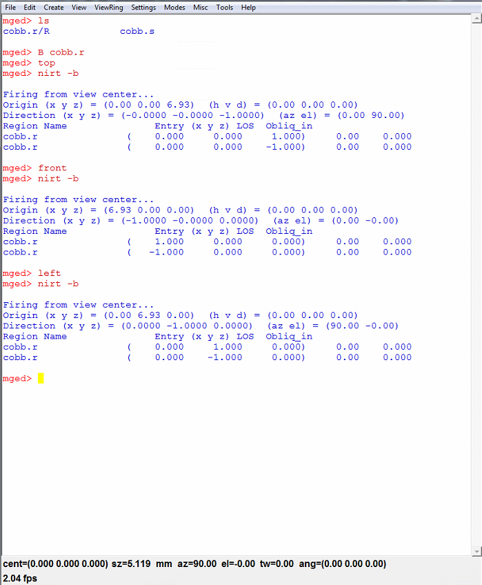 | 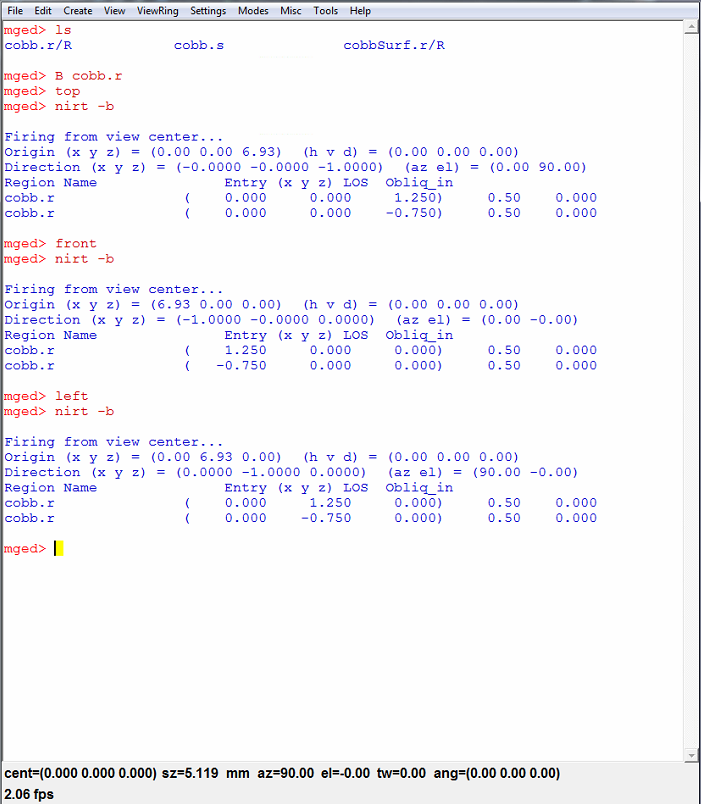 |
{kind=link}
{kind=link}
{kind=link}
{kind=link}
Using *nirt* to shoot single ray on BoT
Here is an example on how to generate a BoT hemisphere and using *nirt* to do ray tracing in different settings. The table below shows the visualized result of ray tracing. For more details, please refer to the *nirt* manual(Download).

| nirt 1 | nirt 2 | nirt 3 | A closeup of nirt 3 |
| 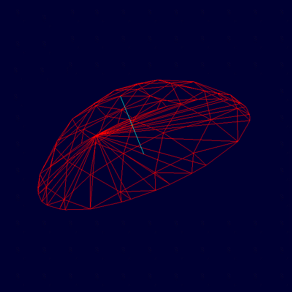 | 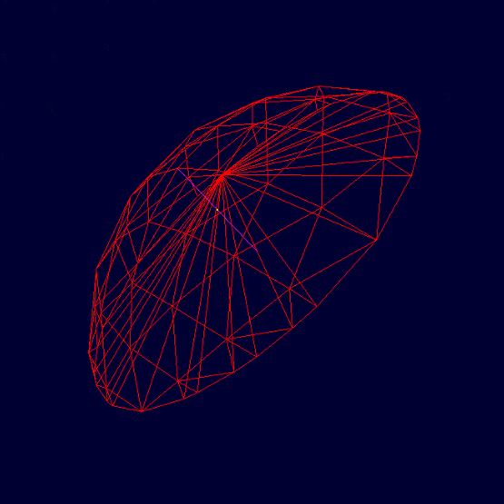 | 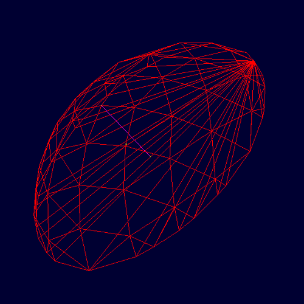 | 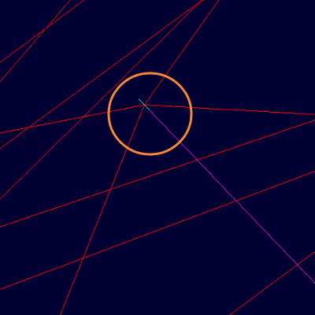 |
{kind=link}
{kind=link}
{kind=link}
{kind=link}